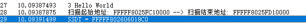

SSDT & SSSDT
SSDT表：系统服务描述符表，把应用层与内核层联系起来，起到桥梁的作用。
比如 ReadProcessMemory函数 在r3被调用，其功能实现需要经过kerneldll传递到ntdll.dll然后经过：
mov eax, API索引号
mov edx, 一个地址 ;该地址里的值是一个函数地址
call [edx] ;调用这个函数，实现进入0环
retn 14h
这个内核函数的地址在SSDT表中位于某个位置，这个位置就是索引号。参考：断其粮道——内核级拒绝服务攻击
枚举SSDT表也是反内核工具最基本的功能，在64位系统中找SSDT表，需要先找KeServiceDescriptorTable函数，该函数没有被导出，只能动态的查找地址。但是我们可以通过查找msr(c0000082)这个特殊的寄存器来替代查找KeServiceDescriptorTable这一步。
MSR 寄存器
MSR（Model Specific Register）是x86架构中的概念，指的是在x86架构处理器中，一系列用于控制CPU运行、功能开关、调试、跟踪程序执行、监测CPU性能等方面的寄存器。
这个寄存器他有很多，msr是他们统一的后缀。
MSR 是CPU 的一组64 位寄存器，可以分别通过RDMSR 和WRMSR 两条指令进行读和写的操作，前提要在ECX 中写入MSR 的地址。
对于RDMSR 指令，将会返回相应的MSR 中64bit 信息到(EDX：EAX)寄存器中；对于WRMSR 指令，把要写入的信息存入(EDX：EAX)中，执行写指令后，即可将相应的信息存入ECX 指定的MSR 中。MSR 的指令必须执行在level 0 或实模式下。
在这里他的用处就是得到KeServiceDescriptorTable的地址。
https://ti.dbappsecurity.com.cn/info/2275这篇文章介绍了利用msr禁用系统服务来提高木马的挖矿效率的情况。
定位ssdt
双击调试
需要提前配置一下Windbg的双机调试。核心就是添加串口，记住管道名词，开启调试模式，虚拟机配置一下msconfig，windbg连接注意port填写管道名称，其他的都是这些教程互相抄来抄去，没屌用。
不知道为啥开启了串口之后CPU占用一直下不去，12500h的cpu，32G内存。
定位思路
基本思路如下：
rdmsr c0000082 -> KiSystemCall64Shadow -> KiSystemServiceUser -> SSDT
上述思路的内核思想是：在内核中我们可以通过任意一个内核函数通过向前或者向后偏移来找到 KiSystemServiceRepeat函数最后定位SSDT表或者SSDTShadow表
KiSystemServiceRepeat前两行就是SSDT表和SSSDT表的地址
特征码
这里有一个用来定位的特征码，通过这个特征码进行匹配就可以定位到这里
- 0x4c 0x8d 0x15 ---> Get SSDT
- 0x4c 0x8d 0x1d ---> Get SSDTShadow
需要注意的是：
- msr在开启内核隔离模式下获取的是
KiSystemCall64Shadow；而在未开启内核模式下则是获取的KiSystemCall64。
这里得到的就是KiSystemCall64函数的地址。不过问题不大，反正都是通过跑偏移来遍历的。
程序实现
#include <ntifs.h>
#pragma intrinsic(__readmsr)
ULONGLONG ssdt_address = 0;
// 获取 KeServiceDescriptorTable 首地址
ULONGLONG GetKeServiceDescriptorTable()
{
// 设置起始位置
PUCHAR StartSearchAddress = (PUCHAR)__readmsr(0xC0000082);
// 设置结束位置
PUCHAR EndSearchAddress = StartSearchAddress + 0x100000;
DbgPrint("扫描起始地址: %p --> 扫描结束地址: %p \n", StartSearchAddress, EndSearchAddress);
PUCHAR ByteCode = NULL;
UCHAR OpCodeA = 0, OpCodeB = 0, OpCodeC = 0;
ULONGLONG addr = 0;
ULONG templong = 0;
for (ByteCode = StartSearchAddress; ByteCode < EndSearchAddress; ByteCode++)
{
// 使用MmIsAddressValid()函数检查地址是否有页面错误,就是判断地址是否合法可用，防止BSOD
if (MmIsAddressValid(ByteCode) &&
MmIsAddressValid(ByteCode + 1) &&
MmIsAddressValid(ByteCode + 2))
{
OpCodeA = *ByteCode;
OpCodeB = *(ByteCode + 1);
OpCodeC = *(ByteCode + 2);
// 对比特征值 寻找 nt!KeServiceDescriptorTable 函数地址
/*
nt!KiSystemServiceRepeat:
fffff803`6ebd2b94 4c8d15e59c3b00 lea r10, [nt!KeServiceDescriptorTable (fffff803`6ef8c880)]
fffff803`6ebd2b9b 4c8d1dde1e3a00 lea r11, [nt!KeServiceDescriptorTableShadow (fffff803`6ef74a80)]
*/
if (OpCodeA == 0x4c && OpCodeB == 0x8d && OpCodeC == 0x15)
{
// 获取高位地址
memcpy(&templong, ByteCode + 3, 4);
DbgPrint("ByteCode + 3 == %p\n", ByteCode + 3);
DbgPrint("*(ByteCode + 3) == %p\n", *(ByteCode + 3));
DbgPrint("templong = %p\n", templong);
// 因为这是一条lea指令，lea后面是一相对于下一个指令的偏移地址，所以这里templong+bytecode实际上就是偏移+基地址
// +7是因为指令长度
addr = (ULONGLONG)templong + (ULONGLONG)ByteCode + 7;
return addr;
}
}
}
return 0;
}
NTSTATUS unload(PDRIVER_OBJECT driver)
{
DbgPrint("Driver unload success..");
return STATUS_SUCCESS;
}
NTSTATUS DriverEntry(PDRIVER_OBJECT driver, PUNICODE_STRING RegistryPath)
{
driver->DriverUnload = unload;
DbgPrint("3 Hello World\n");
ssdt_address = GetKeServiceDescriptorTable();
DbgPrint("SSDT = %p \n", ssdt_address);
return STATUS_SUCCESS;
}
验证
程序执行得到地址：

windbg得到地址：
成功找到了ssdt表。
解密ssdt
定位到了ssdt表中的内容，但是这个内容并不是内核函数的真正的地址，还需要进行简单的地址计算才能得到真实的地址。
得到 ServiceTableBase 的地址后，就能得到每个服务函数的地址。但这个表存放的并不是 SSDT 函数
的完整地址，而是其相对于 ServiceTableBase[Index]>>4 的数据，每个数据占四个字节，所以计算指
定 Index 函数完整地址的公式为：
- x86:
FuncAddress = KeServiceDescriptorTable + 4 * Index
- x64：
FuncAddress = [KeServiceDescriptorTable+4*Index]>>4 + KeServiceDescriptorTable
方法1 - 抄源码
直接从内核中提取解析地址的源码，直接使用shellcode。
typedef UINT64(__fastcall* SCFN)(UINT64, UINT64);
SCFN scfn;
VOID DecodeSSDT()
{
UCHAR strShellCode[36] = "\x48\x8B\xC1\x4C\x8D\x12\x8B\xF8\xC1\xEF\x07\x83\xE7\x20\x4E\x8B\x14\x17\x4D\x63\x1C\x82\x49\x8B\xC3\x49\xC1\xFB\x04\x4D\x03\xD3\x49\x8B\xC2\xC3";
scfn = ExAllocatePool(NonPagedPool, 36);
memcpy(scfn, strShellCode, 36);
}
这样就能得到对应的调用号的地址。rdx=ssdt；rcx=index
#include <ntifs.h>
#pragma intrinsic(__readmsr)
typedef struct _SYSTEM_SERVICE_TABLE
{
PVOID ServiceTableBase;
PVOID ServiceCounterTableBase;
ULONGLONG NumberOfServices;
PVOID ParamTableBase;
} SYSTEM_SERVICE_TABLE, * PSYSTEM_SERVICE_TABLE;
typedef UINT64(__fastcall* SCFN)(UINT64, UINT64);
SCFN scfn;
ULONGLONG ssdt_base_aadress;
PSYSTEM_SERVICE_TABLE KeServiceDescriptorTable;
// 解密算法
VOID DecodeSSDT()
{
UCHAR strShellCode[36] = "\x48\x8B\xC1\x4C\x8D\x12\x8B\xF8\xC1\xEF\x07\x83\xE7\x20\x4E\x8B\x14\x17\x4D\x63\x1C\x82\x49\x8B\xC3\x49\xC1\xFB\x04\x4D\x03\xD3\x49\x8B\xC2\xC3";
scfn = ExAllocatePool(NonPagedPool, 36);
memcpy(scfn, strShellCode, 36);
}
// 获取 KeServiceDescriptorTable 首地址
ULONGLONG GetKeServiceDescriptorTable()
{
// 设置起始位置
PUCHAR StartSearchAddress = (PUCHAR)__readmsr(0xC0000082);
// 设置结束位置
PUCHAR EndSearchAddress = StartSearchAddress + 0x100000;
DbgPrint("扫描起始地址: %p --> 扫描结束地址: %p \n", StartSearchAddress, EndSearchAddress);
PUCHAR ByteCode = NULL;
UCHAR OpCodeA = 0, OpCodeB = 0, OpCodeC = 0;
ULONGLONG addr = 0;
ULONG templong = 0;
for (ByteCode = StartSearchAddress; ByteCode < EndSearchAddress; ByteCode++)
{
// 使用MmIsAddressValid()函数检查地址是否有页面错误,就是判断地址是否合法可用，防止BSOD
if (MmIsAddressValid(ByteCode) &&
MmIsAddressValid(ByteCode + 1) &&
MmIsAddressValid(ByteCode + 2))
{
OpCodeA = *ByteCode;
OpCodeB = *(ByteCode + 1);
OpCodeC = *(ByteCode + 2);
if (OpCodeA == 0x4c && OpCodeB == 0x8d && OpCodeC == 0x15)
{
// 获取高位地址
memcpy(&templong, ByteCode + 3, 4);
DbgPrint("ByteCode + 3 == %p\n", ByteCode + 3);
DbgPrint("*(ByteCode + 3) == %p\n", *(ByteCode + 3));
DbgPrint("templong = %p\n", templong);
// 因为这是一条lea指令，lea后面是一相对于下一个指令的偏移地址，所以这里templong+bytecode实际上就是偏移+基地址
// +7是因为指令长度
addr = (ULONGLONG)templong + (ULONGLONG)ByteCode + 7;
return addr;
}
}
}
return 0;
}
// 根据序号得到函数地址
ULONGLONG GetSSDTFunctionAddress(ULONGLONG NtApiIndex)
{
ULONGLONG ret = 0;
// 得到ssdt基地址
ssdt_base_aadress = GetKeServiceDescriptorTable();
// 加载shellcode
DecodeSSDT();
ret = scfn(NtApiIndex, ssdt_base_aadress);
return ret;
}
NTSTATUS unload(PDRIVER_OBJECT driver)
{
DbgPrint("Driver unload success..");
return STATUS_SUCCESS;
}
NTSTATUS DriverEntry(PDRIVER_OBJECT driver, PUNICODE_STRING RegistryPath)
{
driver->DriverUnload = unload;
DbgPrint("4 Hello World\n");
ssdt_base_aadress = GetKeServiceDescriptorTable();
DbgPrint("SSDT = %p \n", ssdt_base_aadress);
ULONGLONG func_addr = GetSSDTFunctionAddress(51);
DbgPrint("NtOpenFile addr = %p \n", func_addr);
return STATUS_SUCCESS;
}
方法2 - 直接算
过程
注意：windbg默认都是16进制的
定位到函数：
找到ssdt表的基地址：
fffff8065c8c7b30根据调用号找偏移：假设调用号51
得到偏移地址
偏移地址>>4，加上基地址，得到真正地址
代码实现
我更喜欢这种方式，更加简单明了，同时减少了很多不必要的语法，更好的防止BSOD。
可以看到这里得到的是NtOpenFile函数
NTSTATUS unload(PDRIVER_OBJECT driver)
{
DbgPrint("Driver unload success..");
return STATUS_SUCCESS;
}
// 注意数据类型
ULONGLONG GetTrueAddr(LONG num, ULONGLONG addr_ssdt)
{
LONGLONG ssdt_base = *(PLONGLONG)addr_ssdt;
DbgPrint("ssdt base addr: %p --> %p\n", addr_ssdt, ssdt_base);
LONGLONG addr_func_offset = ssdt_base + num * 4;
LONG func_offset = *(PLONGLONG)addr_func_offset;
DbgPrint("func offset addr: %p --> %p\n", addr_func_offset, func_offset);
ULONGLONG ret = ssdt_base + (func_offset >> 4);
return ret;
}
NTSTATUS DriverEntry(PDRIVER_OBJECT driver, PUNICODE_STRING RegistryPath)
{
driver->DriverUnload = unload;
DbgPrint("3 Hello World\n");
ssdt_address = GetKeServiceDescriptorTable();
//DbgPrint("SSDT = %p \n", ssdt_address);
LONG call_num = 51;
ULONGLONG func_addr = GetTrueAddr(call_num, ssdt_address);
DbgPrint("call num 51 addr is = %p \n", func_addr);
return STATUS_SUCCESS;
}
其他的函数都一样，这里就是通过计算得到的指定函数调用号的函数地址。